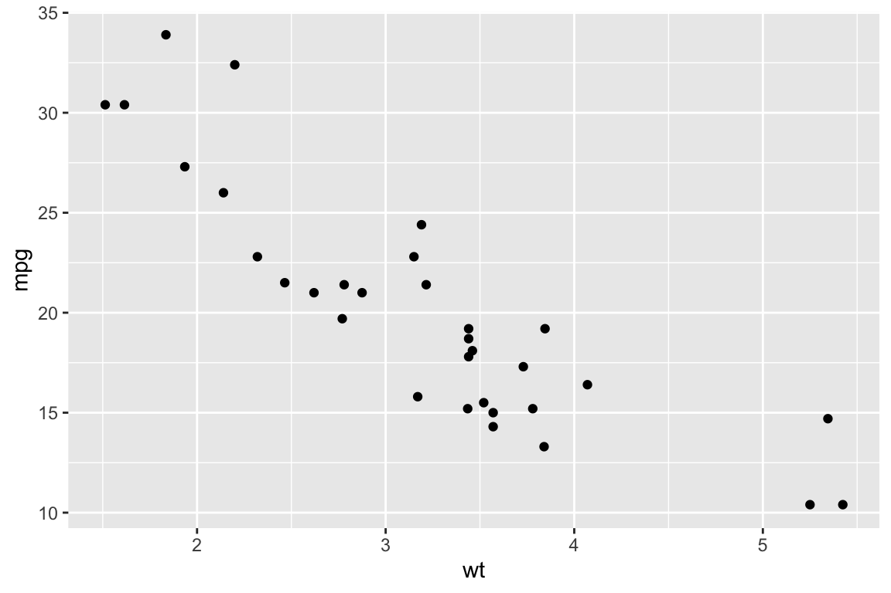
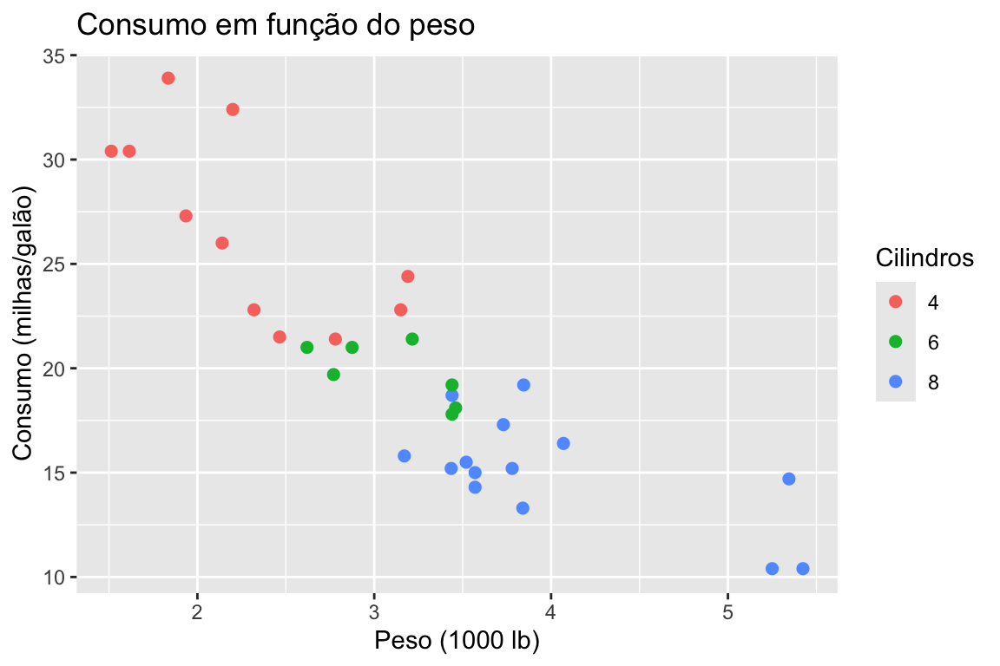
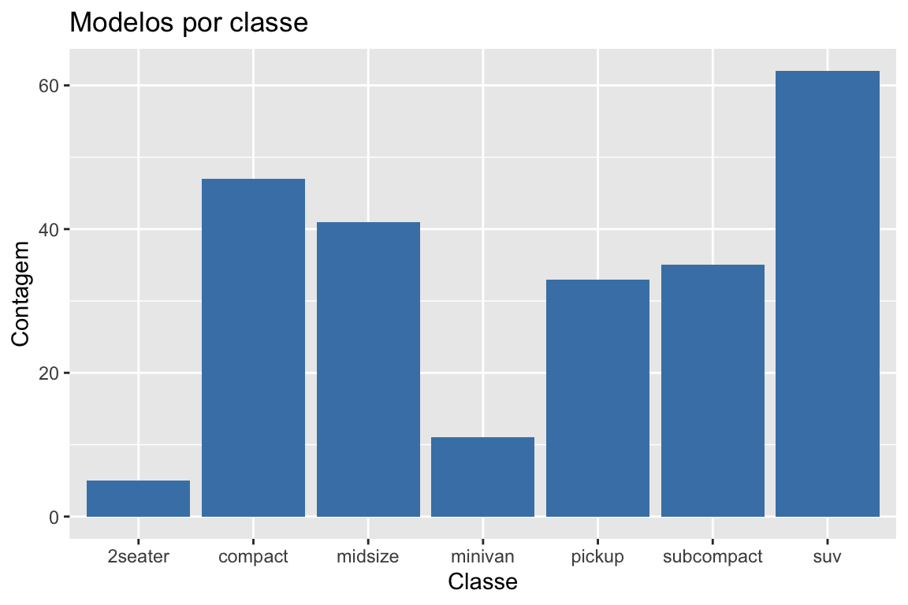
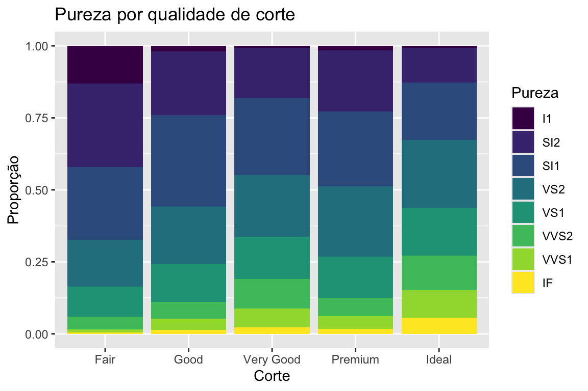
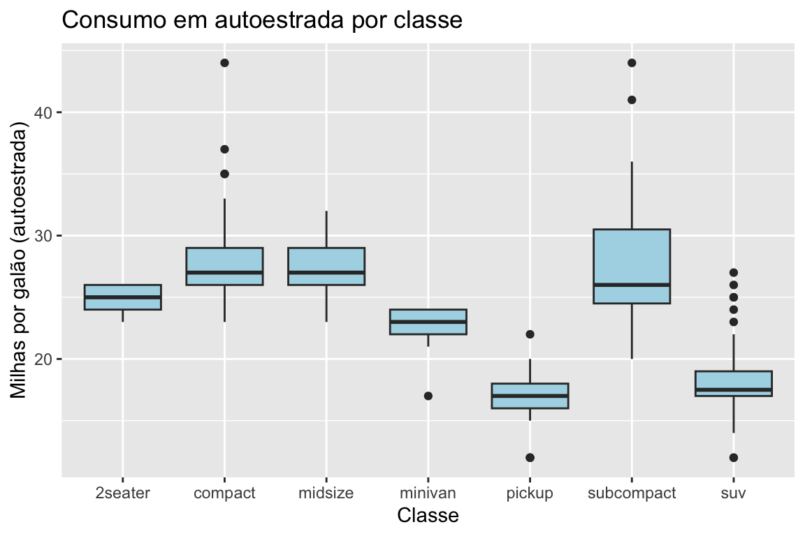
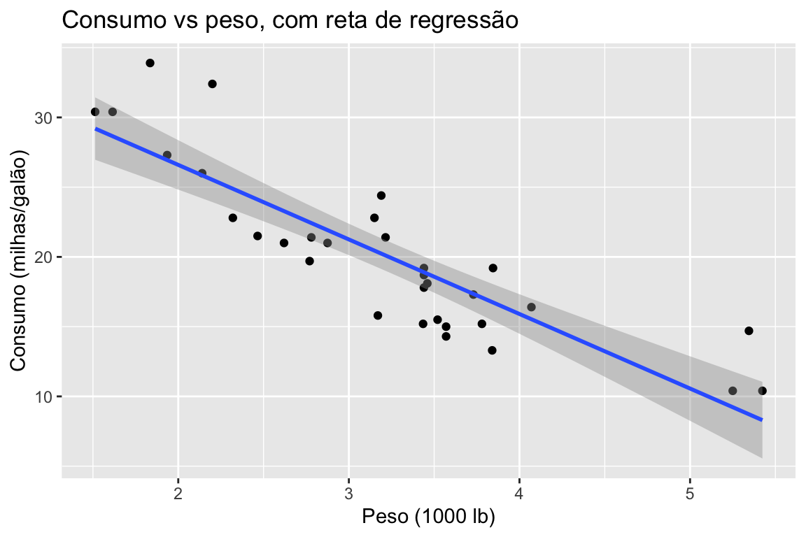
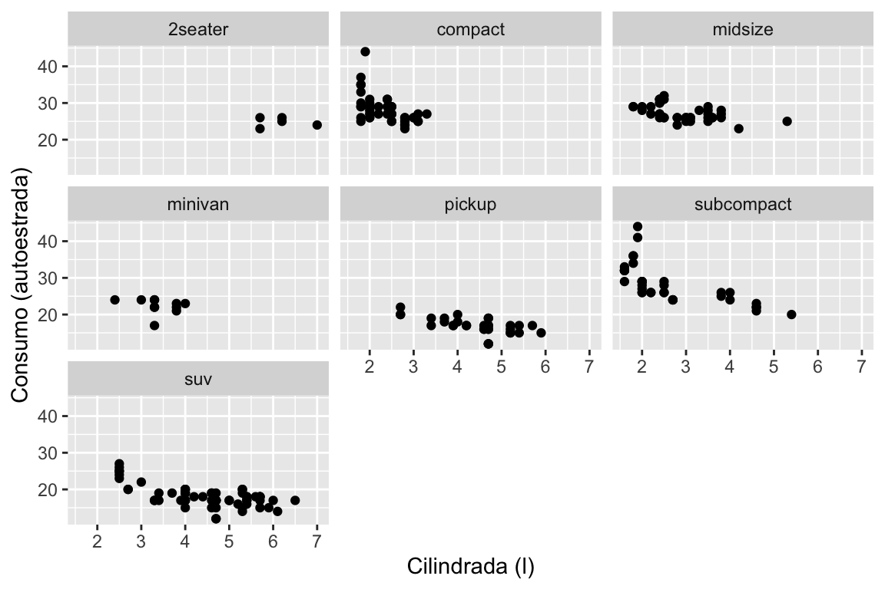
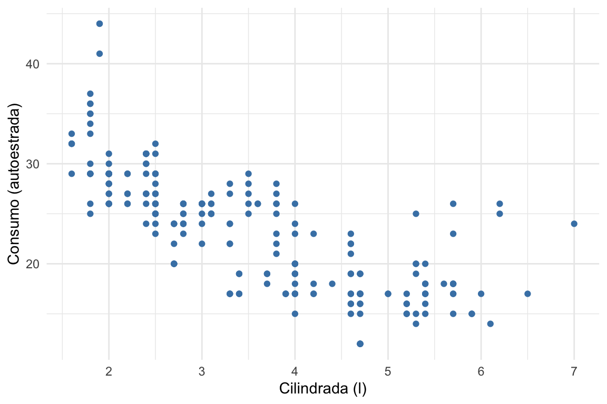

Capítulo 16 O pacote ggplot2
No Capítulo 14 aprendemos a desenhar gráficos com o R base, acrescentando
elementos ao gráfico um comando de cada vez. Neste capítulo conhecemos uma abordagem
diferente e muito influente: a do ggplot2, que não nos pede que desenhemos o gráfico,
mas que o descrevamos.
16.1 Um pouco de história
A ideia que está por trás do ggplot2 nasceu num livro: The Grammar of Graphics, do
estatístico e informático Leland Wilkinson, publicado em 1999 (com segunda edição em
2005). Wilkinson propôs que qualquer gráfico estatístico, por mais complexo, pode ser
descrito como a combinação de um pequeno número de componentes independentes — os
dados, os mapeamentos para propriedades visuais, as formas geométricas, as escalas, o
sistema de coordenadas. Tal como a gramática de uma língua permite formar infinitas
frases a partir de poucas regras, esta “gramática dos gráficos” permite construir uma
enorme variedade de visualizações a partir de poucos elementos.
Em meados da década de 2000, Hadley Wickham implementou e adaptou estas ideias num
pacote de R, a que chamou ggplot2 — o “gg” vem precisamente de grammar of graphics.
A sua adaptação, publicada em 2010 no artigo A Layered Grammar of Graphics, organiza a
construção de um gráfico em camadas que se somam umas às outras. O ggplot2
tornou-se, desde então, um dos pacotes mais usados do R e uma das pedras angulares do
tidyverse.
16.2 Porque é importante
O que distingue o ggplot2 da abordagem do R base é a mudança de perspetiva. Com o R
base, pensamos em instruções: “desenha estes pontos, agora acrescenta uma legenda,
agora uma linha”. Com o ggplot2, pensamos em relações: “a variável wt mapeia-se no
eixo horizontal, a mpg no eixo vertical, e cada observação é um ponto”. Descrevemos a
correspondência entre os dados e as propriedades visuais, e o pacote encarrega-se do
resto — escalas, eixos, legendas.
Desta filosofia decorrem as suas grandes vantagens: a consistência (a mesma gramática serve para todos os tipos de gráfico), a facilidade de construir gráficos sofisticados por acumulação de camadas, resultados com qualidade de publicação logo por omissão, e um vasto ecossistema de extensões. É, por tudo isto, a ferramenta de eleição para a visualização de dados em R.
Este capítulo usa o ggplot2, incluído no tidyverse. Instale-o com
install.packages("ggplot2") (ou install.packages("tidyverse")) e carregue-o com
library(ggplot2).
16.3 A gramática, camada a camada
Um gráfico em ggplot2 compõe-se dos seguintes elementos:
- Dados (data) — o conjunto de dados a visualizar (um data frame ou tibble).
-
Estética (aes) — os mapeamentos das variáveis para propriedades visuais: a
posição (
x,y), a cor (colour), o tamanho (size), a forma (shape), o preenchimento (fill). -
Geometrias (geoms) — o tipo de objeto que representa os dados: pontos
(
geom_point()), barras (geom_bar()), linhas (geom_line()), caixas (geom_boxplot()), etc. - Escalas (scales) — como os valores dos dados se traduzem em propriedades visuais (que cores, que intervalos nos eixos).
- Facetas (facets) — a divisão do gráfico em subgráficos, um por grupo.
- Temas (themes) — a aparência geral (tipos de letra, fundos, grelhas).
As camadas somam-se literalmente com o operador +. A estrutura mínima é sempre a
mesma: ggplot() recebe os dados e a estética, e uma geometria acrescenta os objetos
visuais.
library(ggplot2)
ggplot(data = mtcars, aes(x = wt, y = mpg)) +
geom_point()
Figura 16.1: A estrutura mínima: dados, estética e uma geometria.
Aqui, mtcars são os dados, aes(x = wt, y = mpg) diz que o peso vai no eixo
horizontal e o consumo no vertical, e geom_point() representa cada carro por um ponto.
16.4 Exemplos
Dispersão com uma terceira variável. A força da estética revela-se quando mapeamos
mais variáveis. Ao colorir os pontos pelo número de cilindros, acrescentamos uma
terceira dimensão de informação sem mudar de gráfico. Como cyl é, na verdade, uma
variável categórica, convertemo-la num fator:
ggplot(mtcars, aes(x = wt, y = mpg, colour = factor(cyl))) +
geom_point(size = 2) +
labs(title = "Consumo em função do peso",
x = "Peso (1000 lb)", y = "Consumo (milhas/galão)",
colour = "Cilindros")
Figura 16.2: Consumo vs peso, com a cor a codificar o número de cilindros.
Gráfico de barras. Com uma variável categórica, geom_bar() conta automaticamente
as observações de cada categoria:
ggplot(mpg, aes(x = class)) +
geom_bar(fill = "steelblue") +
labs(title = "Modelos por classe", x = "Classe", y = "Contagem")
Figura 16.3: Número de modelos por classe de automóvel (conjunto mpg).
Barras proporcionais. Mapeando fill para uma segunda variável categórica e usando
position = "fill", cada barra passa a mostrar proporções — ideal para comparar a
composição entre grupos. Usamos o conjunto diamonds, que acompanha o ggplot2:
ggplot(diamonds, aes(x = cut, fill = clarity)) +
geom_bar(position = "fill") +
labs(title = "Pureza por qualidade de corte",
x = "Corte", y = "Proporção", fill = "Pureza")
Figura 16.4: Composição da pureza (clarity) em cada qualidade de corte (cut).
Caixas de bigodes por grupo. A geom_boxplot() compara a distribuição de uma
variável quantitativa entre categorias:
ggplot(mpg, aes(x = class, y = hwy)) +
geom_boxplot(fill = "lightblue") +
labs(title = "Consumo em autoestrada por classe",
x = "Classe", y = "Milhas por galão (autoestrada)")
Figura 16.5: Consumo em autoestrada por classe de automóvel.
Tendência com regressão. Somando uma camada geom_smooth(), o ggplot2 ajusta e
desenha uma tendência — com method = "lm", a reta de regressão dos mínimos quadrados,
rodeada da sua banda de confiança:
ggplot(mtcars, aes(x = wt, y = mpg)) +
geom_point() +
geom_smooth(method = "lm") +
labs(title = "Consumo vs peso, com reta de regressão",
x = "Peso (1000 lb)", y = "Consumo (milhas/galão)")
Figura 16.6: Dispersão com reta de regressão e banda de confiança.
Facetas. As facetas dividem o gráfico numa grelha de subgráficos, um por grupo, partilhando os eixos — o que torna as comparações imediatas. Aqui, a relação entre cilindrada e consumo, separada por classe:
ggplot(mpg, aes(x = displ, y = hwy)) +
geom_point() +
facet_wrap(~ class) +
labs(x = "Cilindrada (l)", y = "Consumo (autoestrada)")
Figura 16.7: Subgráfico por classe, usando a função facet_wrap().
Temas. Um tema controla toda a aparência do gráfico. Trocar theme_minimal() por
outro tema muda o aspeto sem tocar nos dados nem na estética:
ggplot(mpg, aes(x = displ, y = hwy)) +
geom_point(colour = "steelblue") +
theme_minimal() +
labs(x = "Cilindrada (l)", y = "Consumo (autoestrada)")
Figura 16.8: O mesmo gráfico com o tema theme_minimal().
Alguns hábitos tornam qualquer gráfico melhor: dar títulos e rótulos claros com
labs(title = ..., x = ..., y = ...); evitar sobrecarregar o gráfico com informação a
mais; escolher cores com bom contraste (e legíveis por quem tem daltonismo, por exemplo
com scale_colour_viridis_d()); e usar facetas em vez de amontoar tudo num só painel
quando há muitos grupos.
16.5 Exercícios
Nos exercícios seguintes, use o ggplot2 e os conjuntos de dados indicados.
1. Com o conjunto mtcars, faça um gráfico de dispersão entre wt e mpg,
colorindo os pontos pela variável cyl.
2. Com o conjunto mtcars, faça um gráfico de dispersão entre mpg e hp,
colorindo os pontos por cyl e variando a forma (shape) dos pontos por am.
3. Com o conjunto mpg, faça um gráfico de barras da variável drv e altere a cor
das barras com fill.
4. Com o conjunto diamonds, faça um gráfico de barras da variável cut,
preenchendo (fill) pelas categorias de clarity. Use position = "fill" para
comparar as proporções relativas.
5. Com o conjunto mpg, desenhe um histograma da variável hwy e sobreponha-lhe
uma curva de densidade com geom_density(). Explore o argumento alpha para controlar
a transparência.
6. Faça uma caixa de bigodes de hwy por manufacturer (conjunto mpg),
ordenando os fabricantes pela média de hwy.
Sugestão: forcats::fct_reorder().
7. Com o conjunto iris, faça caixas de bigodes de Sepal.Length por espécie e
sobreponha um ponto com a média de cada grupo, usando stat_summary().
8. Com o conjunto mpg, ajuste uma curva LOESS a displ vs hwy com
geom_smooth(), separando por drv com facet_grid().
9. Exporte um dos seus gráficos para um ficheiro .png com
ggsave("grafico.png").
10. Escolha um conjunto de dados à sua escolha (ou um tibble pequeno) e crie uma
visualização que combine pelo menos dois tipos de geometria (geom) diferentes
— por exemplo, pontos e uma linha de tendência.
Dominadas a leitura, a manipulação e a visualização de dados, encerra-se a parte
aplicada de tratamento de dados. A partir daqui, o livro entra no seu tema central: a
aleatoriedade e a simulação. Começamos, no próximo capítulo, pela ferramenta
mais elementar para gerar acaso no R — a função sample().